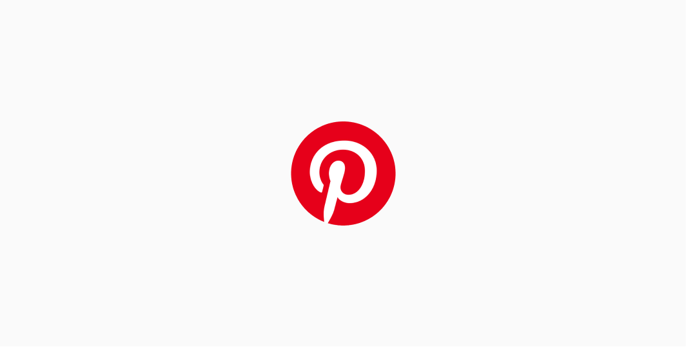

Duration: March 2020-Present
My Role: Product Designer(contract)
Image credit: Pinterest Newsroom Website
Project Baseline by Verilyopen_in_new is the quest to collect comprehensive health data and use it as a map and compass, pointing the way to disease prevention. People can contribute and participate in clinical research through Project Baseline(PB). Likewise, through PB, Verily is building a connected ecosystem, engaging partners across healthcare, life sciences and technology.
Image credit: Pinterest on YouTube
As a product designer, I collaborated with cross functional teams and partner UX designers to support Story Pin development by executing ideas, research, wireframe, prototypes, documentation, etc.
As a product designer on Creators Team, I've involved in various types of projects from exploring visuals & interactions to setting logics to create more effective and consistent experience across. Projects that I've been involved includes:
Project Baseline by Verilyopen_in_new is the quest to collect comprehensive health data and use it as a map and compass, pointing the way to disease prevention. People can contribute and participate in clinical research through Project Baseline(PB). Likewise, through PB, Verily is building a connected ecosystem, engaging partners across healthcare, life sciences and technology. 
As a solo product designer, I've closely worked alongside 1 product manager, 2 back end developers, 1 front-end developer, and many stakeholders like Legal and IP Ops.
Collaborating with cross functional teams, I've supported the product development from the early stage ideation through the implementation for alpha testing. As a product designer, I:
Jon Grossman | UX Industrial Designer at Verily Life Sciences